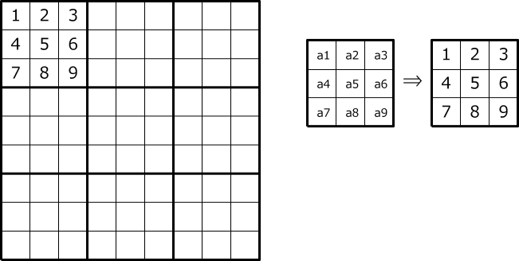
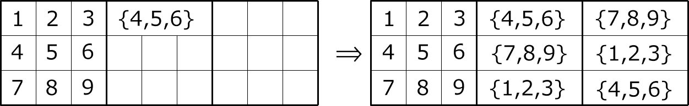

LatinSquare
Latin squares is a Matrix with numbers 1 to n arranged vertically and horizontally without overlapping.
Sudoku's solution is that it divides the 9×9 Latin square into 3×3 blocks and places numbers 1 to 9 on the block without overlapping.
There is 5.525×1027 for the 9×9 Latin square(5524751496156892842531225600).
The 9×9 Latin square with block constraint(Sudoku's solution) is 6.671×1021 and
about 1/1,000,000 (6670903752021072936960).
reference: Frazer Jarvis, June 20, 2005,Enumerating possible Sudoku grids,
http://www.afjarvis.staff.shef.ac.uk/Sudoku/Sudoku.pdf
Here, counting is not an objective, so you should remember only a lot of things
(it is difficult if you do not devise some processing on the whole number)
i make a simple application to generate Latin square. Try running LatinSquareExer.
step 1
i want to eliminate essentially the same Latin Square, so fix the number in block 1 (upper left block). If we convert {ak => k} to the whole square when the number of block 1 is {ak | k=1-9}, the left square It can convert it. 
step 2
Consider the numbers entering blocks B2 and B3.
First is the case where {4,5,6} is in the first line of block B2.{} Means that the order is arbitrary.
If the first row of Latin square block B2 is "4,5,6", even if column C4, C5, C6 is arbitrarily exchanged,
it is Latin squares. At this time, the first line of block B3 is determined as {7,8,9}.
Further, the third line of the block B2 becomes {1,2,3}, and the second line {7,8,9} of the block B2.
After all, if the first line of block B2 is {4,5,6}, all of blocks B2 and B3 are determined.
The same is true when the first line of block B2 is {7, 8, 9}.
Likewise, the case where the first line of block B2 is {7,8,9} is determined.
Let this pattern be "456,789" type.
Since {abc} is arranged in six ways (3!) (abc,acb,bac,bca,cab,cba),
there are 2×(3!)6=93,312 types.

step 3
Next is the case where the first line of block B2 is {4,5,7}. The first line of B3 is {6,8,9}.
When {a,b,c}={1,2,3}, the second line of block B2 is {8,9,a}, and the third line of B2 is {6,b,c}.
And the second line of block B3 is {7,b,c}, and the third line of B3 is {4,5,a}.
There are 3 ways of selecting abc with combination
3C1.
Let this pattern be "457,689" type.
There are 9 patterns in the first line of the block B2.
({4,5,7},{4,5,8},{4,5,9},{4,6,7},{4,6,8},{4,6,9},{5,6,7},{5,6,8},{5,6,9})
"457, 689" type there are 2×9×3×(3!)6 = 2,519,424 types.
step 4
For blocks B4 and B7, we can also determine patterns as in steps 2 and 3.
If you have reached this point (or warped),
you may want to move the Latin square generation application LatinSquareExer).
If you select blocks B2, B3, B4, B7, you will see the number of Latin Square with block constraints
for this pattern under the B 5689 button. B5689 When you click the button,
it displays in the order of individual Latin squares.
The number of Latin squares with block constraints that can be solved by Sudoku is 6.671×1021/(9!).
Try and experience how many Numeral arrays are available for Sudoku's solution.
And if you have a Sudoku analysis program you can create a
"SuDoKu Problem Creation Program" by connecting with this routine.